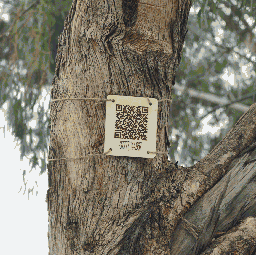

Links will open hypertext popups, letting you continue reading the main text with additional context on your screen unless specified otherwise.
This page is best viewed in a wide window.
Throughout the Mycocosm design studio I attempted to look through the lense of mycelium, decentring myself and exploring ideas in a nonlinear manner. Through reflection and spending time with nature I began drawing parallels between mycelium, trees, autonomous cars and networked communication. The structure of the studio was online sessions; connecting and working with my peers from RMIT Vietnam and learning from lectures of professors from ELISAVA Barcelona, London College of the arts and RMIT. This itself brought an emphasis on the networked structure and form. Implying itself onto the ways of thinking and creating.
This field of practice could be called post-anthropocentric design thinking and practice; a key text that took roots in my practice was James Bridle's "Ways of Being" (Bridle, 2022). Throughout this book Bridle decenters the self and draws parallels between networked communication, AI and the natural world.
Other Ideas I pulled from for this workshop include Vilem Flussers concepts surrounding the technical image. In "Communicology" Flusser states "Codes composed of symbols are methods by which humans try to bridge the abyss that separates them from the world after they have made their leap into existence" (Flusser, 2022). This highlights the current memetic landscape of the internet and suggests that the more codes we condense into a work, the deeper others can connect. This idea inspired a practice I aimed to develop of detaching myself from literature and to expand into a practice that is more focused on a multimodal approach. The practice I'm alluding to is websites that aim to be a canvas for music, video, photos, animations generative art or poetry while interweaving context through the site; aiming to fill the abyss with codified meaning and to better connect with the world.
Branching out through these ideas I began exploring relevant literature to do with this method of presenting media on the net. I decided to take a step back and try to reflect on a more organised or curated method of presenting work has more structure than complex algorithmically served meme content. Two years ago I had read "From Counterculture to Cyberculture" which details the history of the whole earth catalogue, the internet and the through line of the counterculture of the 60s to the Californian Ideology of present (Turner, 2006). The Whole Earth Catalog was a beautifully curated magazine that attempted to bring together the best of the countercultural movement, various ideologies, services, recommendations for books etc. It was built on and distributed via a network structure and in many ways is seen as an early version of the internet. Through this search I also discovered a digitised version of an edition of the Whole Earth Catalogue that was built upon the HyperCard system which I would soon discover was a democratising and empowering tool for creating custom hypertextual databases.
Click Here to open the emulator hosted by the Internet Archive inside this documentFor additional documentation or instructions on how to open the file please see this blog post. (Scott, 2020)
Exploring other HyperCard systems on the Internet Archive and reflecting on what curated media had been in the early days of computing. I reflected on how posting or hosting content on the web has become homogenised by the tech platforms and the ease of access to ready-made tools like Figma and Wix etc.
I went to the library and picked up a book by George P. Landow titled Hyper/Text/Theory, a collection of essays focusing on the HyperCard system that was released for early Macintosh systems (Landow, 1994). This system allowed users a lot of freedom in creating basic applications and databases through a simple interface with extensive customization options. It opened the floodgates for the hypertext movement and medium. While discussing the enriching capabilities of a multimodal hypertextual document, Landow gives an example of Jeff Todd Titon's Voyager Expanded Books, specifically the chapter "Black American Music" in Worlds of Music (Titon, n.d.). In this example, Titon makes use of HyperCard within his text by linking musical notation that the user can pull up alongside the text, as well as a film of C. L. Franklin preaching. This demonstrates the enriching capabilities of a hypertextual document, but my goal was to reach past this.
These personal conceptual developments were taking place alongside reflections that were prompted by the studio leads in Mycocosm; Prompting us to go outside and better connect with nature. One of the initial links or new perspective I gained in the beginning was that of a tree. Trapped in urban infrastructure, locked In a circle. Despite being trapped inside the roundabout the tree seemed like it was reaching out to another on the footpath; to quote my personal reflections “Gently touching, caressing, moving with the wind”. This I saw as a direct allegory for the car that James Bridle traps with lines drawn with salt.
To access the Site in a new tab Click Here
To view the James Bridle Quote in Full Click Here.
On Monday, Keir Williams prompted us with a question: "How can we help ourselves and others better appreciate the non-humans who share our urban spaces?" I went to university and discovered a makers space available to students, which has a 3D printer for free use and a laser cutter. Looking around the makerspace, an idea came to me: to link the tree to the internet, to connect my site, to connect its voice. I laser cut some ply, burning a QR code into the wood. I took some twine rope and attached it to the tree. The work felt finished, and I felt as though it answered the question. Mostly out of sight, the QR code sits about 2 metres up. Nobody notices a tree in the intersection, let alone a small sign. Only a passerby or someone already looking might see what I saw. I don't mind if no one scans it; it felt like a punctuation mark.
On the fifth day (Tuesday), Manuela and Roger spoke on methods for decentring the human, told through a lecture. They provided examples of writing, decoding, and drawing, with interesting examples where some autonomy was given over to nature. I went to university and borrowed a couple of cameras. I had an idea to try to film the possums in my backyard with a flashlight and a GoPro set to an interval (it didn't quite work out as planned). I also borrowed a standard Sony DSLR. There's something about the lens that changes how I see, looking around for more interesting or trivial things. Especially when I have something specific I'm looking for; in this case, it was the more-than-human. I gravitated towards the trapped trees: potted trees at cafes, trees trapped in concrete on footpaths, small bits of grass growing relentlessly from a tiny bit of dirt at the tram stop. The pushing through or breaking out of the earth felt alive and beautiful, a burst, a pop, a revolt. I began watching magpies , watching their behaviors as they navigate the concrete and the sky.
As I arrived home I knew I a wanted to express the feeling I imagined of the trapped tree, pushing up against the concrete but reaching out, reaching up, tying together ideas of connection, network structures, computing and trees. I set up a camera and recorded an improvised movement. Closing my eyes, listening to the wind, curling into a ball and then reaching out. I brought this into a software I discovered during this workshop that is used for pixel art animation and hand drew in additional roots, growing out of me as I moved. This was my final submission I included in the website I was developing to showcase our work. Simplistic, 10 second long, black and white pixel art. The GIF only takes up 211KB. It would have been right at home on a HyperCard.
Reflecting on the overall process I have been building ideas for surrounding imagery, databasing and the more than human, post anthropocentric or post-legible ways of communicating. These ideas are coming together to form a new method of rhizomatic thinking across media forms. I have decided that for my future understandings of anything and everything I need to begin cataloguing, filing, tagging and storing relevant information into personal tags or ineffable categories. This sort of structure could in turn create a new smooth space database as reference to the ideas of smooth space such described by Deleuze and Guattari in “A Thousand Plateaus” - “Smooth space is a field without conduits or channels. A field, a heterogeneous smooth space, is wedded to a very particular type of multiplicity: nonmetric, acentered, rhizomatic multiplicities that occupy space without “counting” it and can “be explored only by legwork.” (Deleuze and Guattari, 1980).
Looking into the future and back through my practice so far I know this is the next step. I’m not able to articulate exactly what form this will take; possibly a complex tagging or vibe based tagging system with various methods for connecting content to each other and to then visualise this in some way, to represent the relationships. The goal would be to not limit this to any medium; facial expressions, colour, music, movies, tiktoks, essays, poems or news clips. The list will hopefully go on and maybe I will find new codes to express through their recombinations.
Sweeny, R.W. (2015) Dysfunction and Decentralization in New Media Art and Education.